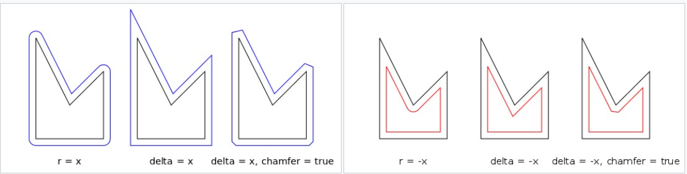
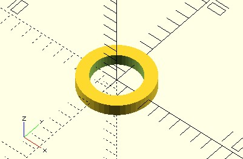
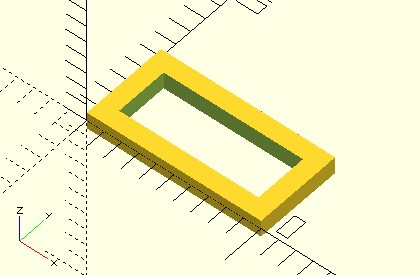
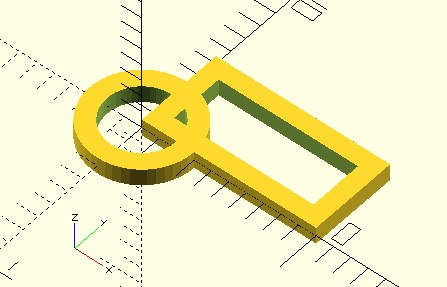
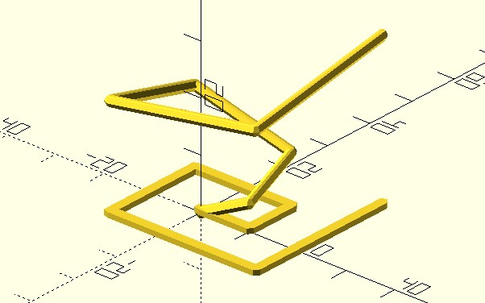
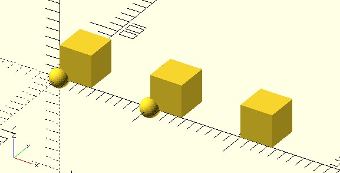
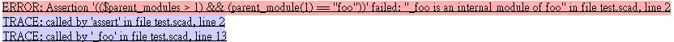

children 子模組
February 26, 2022在〈OpenSCAD CheatSheet〉中，對 Transformations、Boolean operations 等模組來說，後續指定的單一模組或是 {} 中指定的多個模組，是 Transformations、Boolean operations 等模組的子模組。
子模組抽象化
如果想要個圓環要怎麼做呢？基本上可以有兩種方式。第一個方式是畫一個大圓、一個小圓，然後用 difference。例如：
module circle_ring(radius, thickness) {
difference() {
circle(radius);
circle(radius - thickness);
}
}
circle_ring(3, 1, $fn = 48);
另一個方式是使用 offset，可以指定 r、delta 與 chamfer，在〈offset〉有兩張圖，可以得知道它們的作用：

可以撰寫以下的程式：
module circle_ring(radius, thickness) {
difference() {
circle(radius);
offset(r = -thickness)
circle(radius);
}
}
circle_ring(3, 1, $fn = 48);
兩個範例的結果是相同的：

若要做一個框呢？類似地…
module square_frame(size, thickness, center = false) {
difference() {
square(size, center);
offset(r = -thickness)
square(size, center);
}
}
square_frame([10, 5], 1);
這會產生的結果是…

接下來如果要做一個三角形的框呢？接下來如果要做一個星星的框呢？接下來如果要做個愛心的框呢？你應該都會吧！
如果觀察以上這些需求，會發現都使用了 difference、offset 模組與 thickness 參數，其他各自不同的參數是給實際的 circle、square 等模組使用，那麼將相同的程式碼抽取出來，不同的部份使用 children 取代呢？
module frame(thickness) {
difference() {
children();
offset(r = -thickness)
children();
}
}
frame(1)
circle(3, $fn = 48);
frame(1)
square([10, 5]);
在 frame 中，children 表示這邊要操作一個子模組，實際上是哪個並不知道，真正的子模組會在呼叫 frame 時指定，執行的結果如下：

儘管形式上不太相同，children 的行為視實際指定的子模組來決定，確實展現了一種多型（polymorphism）。
在〈hull 繪製凸包〉實作了 polyline2d、polyline3d，兩個模組的實作流程類似，只不過一個使用 circle，另一個使用 sphere，這可以透過 children 來指定：
module polyline_join(points) {
for(i = [0:len(points) - 2]) {
hull() {
translate(points[i])
children();
translate(points[i + 1])
children();
}
}
}
linear_extrude(1)
polyline_join([
[0, 0],
[10, 0],
[10, 10],
[-10, 10],
[-10, -10],
[20, -10],
[20, 20]
]) circle(1);
polyline_join([
[0, 0, 0],
[10, 0, 5],
[10, 10, 10],
[-10, 10, 15],
[-10, -10, 20],
[20, -10, 25],
[20, 20, 30]
]) sphere(1);
如上示範的，透過單一的 polyline_join，就可以解決繪製線段的問題，而且還可以自行指定連接點的模組，繪製的成果如下：

多個子模組
如果要操作的子模組不只一個，可以使用 $children 確認子模組的數量，透過索引來指定子模組，例如：
module lineup(space) {
for(i = [0 : $children - 1]) {
translate([space * i, 0, 0])
children(i);
}
}
lineup(100) {
sphere(10);
sphere(10);
}
lineup(100) {
cube(35);
cube(35);
cube(35);
}
指定多個子模組時，要使用 {} 括住，以上可以繪製出：

檢驗父模組
OpenSCAD 有個 $parent_modules，在自訂模組中使用時，可以用來得知外層有幾個父模組，呼叫 parent_module(index) 的話，可以取得父模組名稱，包含 $parent_modules、parent_module 的模組，算是一個父模組，parent_module 可指定的索引從 0 開始，例如：
module foo0() {
echo("====");
for(i = [1:$parent_modules]) {
echo(i, parent_module(i - 1));
}
}
foo0();
module foo1() {
foo0();
}
foo1();
這會顯示以下的結果：
ECHO: "===="
ECHO: 1, "foo0"
ECHO: "===="
ECHO: 1, "foo0"
父模組的資訊在呼叫 children 的場合也會計算：
module parent() {
children();
}
module foo() {
for(i = [1:$parent_modules]) {
echo(i, parent_module(i - 1));
}
}
foo();
echo("====");
parent()
foo();
echo("====");
parent()
parent()
foo();
這會在控制台顯示以下結果：
ECHO: "===="
ECHO: 1, "foo"
ECHO: "===="
ECHO: 1, "foo"
ECHO: 2, "parent"
ECHO: "===="
ECHO: 1, "foo"
ECHO: 2, "parent"
ECHO: 3, "parent"w
就程式設計而言，需要知道父模組細節來撰寫程式時，意謂著與父模組間具有相依性，因此會使用到 $parent_modules、parent_module(index) 的場合，可能是你想限定模組只能在某些父模組中使用。例如：
module foo() {
module _foo() {
// ... 實作內容
}
_foo();
}
foo();
OpenSCAD 的模組中可以再定義模組，在以上的範例中，_foo 模組設計為 foo 內部會呼叫的模組，然而在一個模組中有大量內部模組的定義時，令模組可讀性降低時，你可能會選擇將之移出，為了避免被誤用，可能會選擇這麼實作：
module _foo() {
assert(
$parent_modules > 1 && parent_module(1) == "foo",
"_foo is an internal module of foo"
);
// ... 實作內容
}
module foo() {
_foo();
}
foo();
在上例中，assert 用於斷言測試，若執行結果為 true，什麼事都不會發生，若為 false 會中斷程式，在控制台顯示以下訊息：
